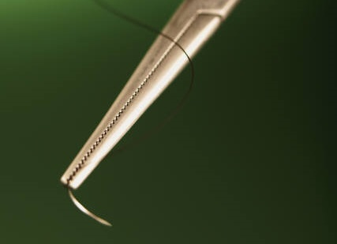

Electrifying Sutures
Nicole Lee
Fall 2012

A grim smile of satisfaction worked its way across his face as he
dragged the last coil of metallic wiring through the prone, unconscious
body on the table. The long hours spent bent over the wound-ravaged
body, invading the lacerations with crimson-tinged metal had finally
paid off. Sound like something out of a horror or sci-fi flick? Well,
it's not. In the near future, surgeons will be able to utilize
electronic circuitry incorporated into sutures for specialized wound
monitoring and repair.
Sutures (also referred to as stitches),
are an indispensable tool for surgery. They are traditionally
responsible for performing one simple task: holding the tissues of a
patient's wound together. Suture thread materials have ranged
from biological resources such as silk, cotton, animal tendons, and
catgut, to the polysynthetic fibers which are now widely used.
However, some believe it is time to try something a little...smarter.
Invented by Professor John Rogers from the
University of Illinois at Urbana-Champaign, "smart sutures" are
equipped with electronic circuits coupled with thin, flexible
sensors. These sensors are capable of detecting abnormally raised
temperatures near the wound site, which indicate infection. Another
potential function of smart sutures is speeding healing through heat
and electrical stimulation. This can be achieved by passing
electrical currents through gold filaments in the silicon sensors,
delivering localized heat to the affected area, as first reported in
Small Magazine.
According to Rogers, the greatest
difficulty in producing this technology was due to the fact that
sutures require not only mechanical strength, but also flexibility.
Smart sutures consist of ultrathin, biocompatible silicon sensors
embedded in silk polymers. The problem with this is that silicon
tends to be very brittle and prone to breaking. Obviously, one
can see how weaving a substance that is ready to shatter through a
patient’s body might be a dangerous idea. To counter this challenge,
researchers responded by laying the silicon nanomembranes as thinly as
possible, allowing the strands to accommodate more tension. The
threads were also spun in a winding, serpentine fashion, further
increasing the suture's capacity to tolerate strain.
But could the materials used to make these
sutures have harmful side effects on patients’ bodies? Rogers
says that two types of polymer substrates were used for the
sutures. The first is polyimide, which is already FDA approved
for implants. The second is purified silk fibroin, which is FDA
approved for conventional, resorbable sutures. We can be hopeful,
then, that there will be no side effects. Company MC10 has been
created to pursue commercialization for this and other innovations in
the field of bio-integrated electronics. In addition, these
sutures have been successfully tested in an in vivo rat study.
However, more extensive evaluations, particularly those on humans, are
required. Could silicon sensors expose patients to mutagenic
radiation? Might they overheat, burning patients where they have
already been wounded? And what deleterious effects might result from
leaving the stitches in on a long-term scale?
Ideally in the future, these electronic sutures would be used in conjunction with polymers coated with antibiotics and other medicines for accelerated healing. Drug release would be stimulated by electric or temperature signals. Thus, electronics are not, in fact, the ingredients for Frankensteinian creations manufactured in the dimly-lit labs of scientists lost to insanity. Rather, electronic sutures may be the stitches of tomorrow, holding people together and speeding them to recovery.
About the Author
Nicole Lee, class of 2015 is an Integrative Biology major pursuing a career as a PA.